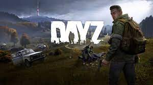

|  |
Перед игроком в DayZ ставится цель выжить во враждебном мире, охваченном зомби-апокалипсисом. Созданный персонаж появляется в игровом мире с пустыми руками, имея при себе только самую простую одежду, химсвет и бинт. Открытый мир игры представляет собой обширную территорию площадью 225 квадратных километров, со множеством городов, деревень, полей и лесов, без каких-либо внутренних барьеров и загрузок; в отличие от одноимённой модификации, практически в любое здание в игре можно зайти[4]. Чтобы остаться в живых, персонаж должен разыскивать в заброшенных зданиях пищу, воду и лекарства[5][6]. Помимо собственно необходимых для выживания припасов, в игре также может найти разнообразные предметы одежды — одежда не только облегчает выживание, защищая персонажа от врагов и непогоды и позволяя носить с собой больше предметов, но и позволяет подчеркнуть его индивидуальность, сделав непохожим на других персонажей[7]. Предоставляя игроку возможность защищать себя от враждебных зомби и других игроков, DayZ содержит множество видов всевозможного оружия, от кухонных ножей до современных автоматов (хотя с версии 1.0 их количество изрядно подсократилось), а также разнообразные боеприпасы, прицелы и прочие принадлежности (среди них: цевья, приклады, сошки, прицелы, а само оружие возможно покрасить (убрано с официальных серверов с версии 1.0). В игру введены возможности выращивания овощей, рыбалки и разнообразной охоты, начиная от силков для поимки зайцев, и заканчивая банальной стрельбой по оленям.